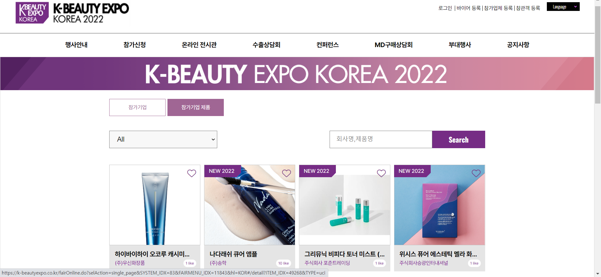
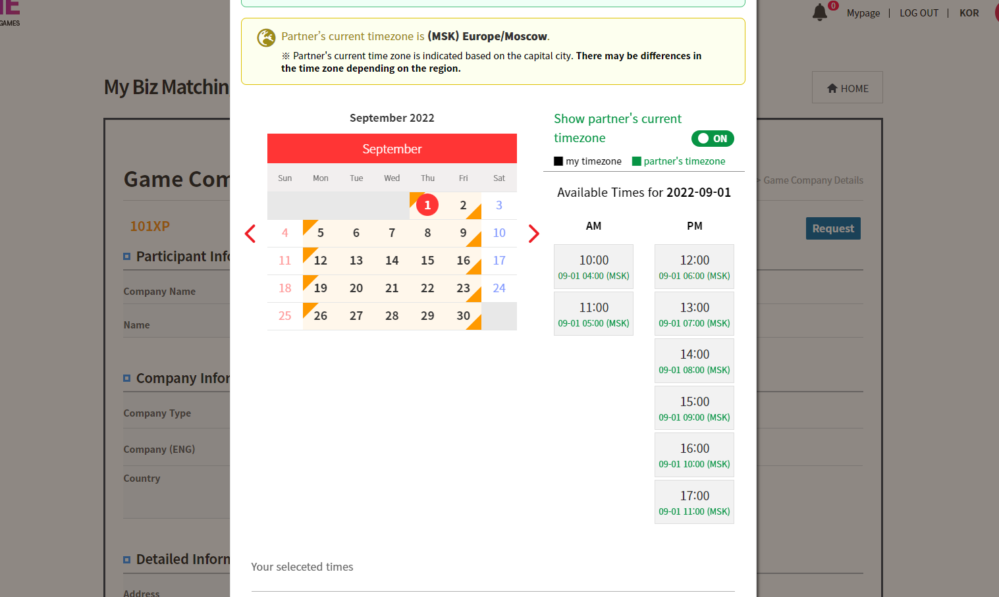
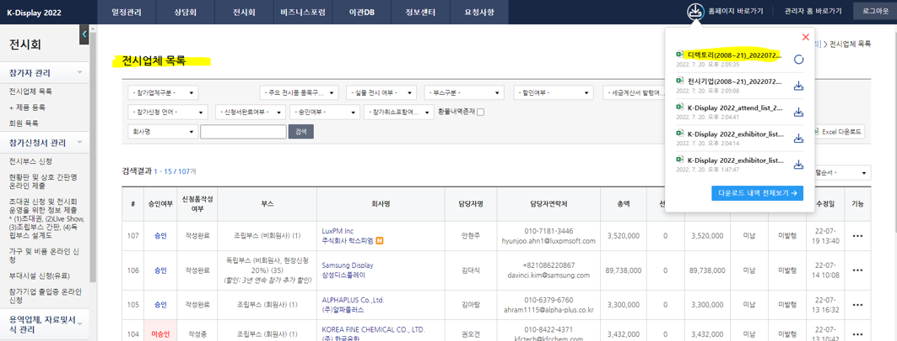

職務 経歴 (2021.11 ~ 2022.09)
[基本情報]
■ 釜山職業専門学校で半年のIT開発者クラス課程を終え、株式会社MICEHUBで勤務しました。
■ 事業内容サマリー
: イベント産業に使用されるソフトウェアの開発。 詳しくは各イベントのウェブサイト構築とショッピングモール構築、イベント内で使われるバイヤーㆍセラー間のビジネスミーティングㆍマッチングシステムを構築する会社。
■ 職務内容サマリー
: フロントエンド(vue.js, html, css)とバックエンド(java, mySQlを通じたDB制御関連)を同時に担当し、イベントウェブサイト構築とイベント管理者システム構築 及び企画の全段階に参加しました。
■ 釜山職業専門学校で半年のIT開発者クラス課程を終え、株式会社MICEHUBで勤務しました。
■ 事業内容サマリー
: イベント産業に使用されるソフトウェアの開発。 詳しくは各イベントのウェブサイト構築とショッピングモール構築、イベント内で使われるバイヤーㆍセラー間のビジネスミーティングㆍマッチングシステムを構築する会社。
■ 職務内容サマリー
: フロントエンド(vue.js, html, css)とバックエンド(java, mySQlを通じたDB制御関連)を同時に担当し、イベントウェブサイト構築とイベント管理者システム構築 及び企画の全段階に参加しました。
《 経験した主な業務 》
1. [Vue.jsでフロントエンド業務の行い] [▲目次]
|
 |
韓国化粧品産業展K-beauty Expoでカタログとショッピングモール機能構築(Frontend)
▶ サイトに訪問する |
 |
KOTRA主管の外資系企業JobFairでエントリーと採用サービス機能構築(Frontend & Backend)、DB設計も直接担当
▶ サイトに訪問する |

|
韓国繊維協会の展示会で複雑なフィルタリング機能が含まれた企業/商品カタログとバイヤー-セラー間のメッセージのやり取りができるメールボックス機能の構築(Frontend & Backend)
▶ サイトに訪問する |
2. [JavaとmySqlを通じたバックエンド(CRUD)業務及び企画] [▲目次]
2.1. 国際的ビジネスミーティングの予約機能の実装

: 展示会でバイヤーとセラーがミーティングの約束をするために会う時間を選択する機能が必要となります。
→ 私は様々な国から来た利害関係者が重ならない時間にミーティングできるように各国のタイムゾーンに基づいたミーティング予約機能を開發しました。
2.2. 他社とのデータベース(DB)Mapping関連の協業
: イベントには複数のITシステム会社が関与し、 同じ顧客情報を複数の会社DBに連動させる作業が必要な場合があります。 これをmappingと呼びます。
→ 私は展示会の顧客管理mapping業務を担当し、弊社DBで起きたCRUD作業を他社DBにも連動させる業務を担当しました。
▶ファイルダウンロード(pdf):私が企画書を作成し、そのまま実装しました。 (韓国語)
2.3. 会社のデータをExcelファイルにして顧客がダウンロードできる機能を実現

: ウェブサイトで確認可能なデータをExcel形式のデータに変換し、お客様に便利にダウンロードしてもらう機能を開発しました。
▶ファイルダウンロード(ppt):私が作成した機能説明書です。 直接企画し、フルスタックで実現しました。(韓国語)
: 勤めていた会社はStrutsを基盤にして、その中にjsp、vue.js、もう一つのバックエンドサーバーとして機能するspringなどが混在した形態のコードを使用し、大小のバグを頻繁的に処理しなければなりませんでした。 おかげでバグが起きた時、慌てずに各種リソースを検索して探して解決する能力を磨くことができました。
: 勤めていた会社では新しいシステムを作るためにreact.jsを積極的に採用していました。 私は直接reactで開発はしませんでしたが、他の開発者が作ったコードで発生するバグのメンテナンスを行いました。
: 勤務していた会社ではAIライブラリを活用して新しいサービスを開発しようとしていました。 この時、職員間のセミナーに積極的に参加し、pythonでAIライブラリ使用に対する基礎的な知識を習得しました。